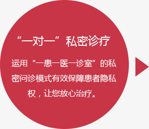
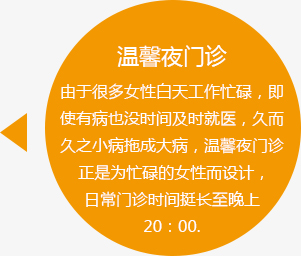

自己是家里的半边天，支撑着丈夫、子女、父母的幸福与快乐。只有自己健康，天才不会塌，家才会幸福。因此，自身的健康关系整个家庭的幸福；而积极参与排查身体＂雷区＂的妇科检查更是自身健康、家庭幸福的保护伞。
我院权威检查技术配合高科技检测设备，精准检查做100％。斥巨资引进法国进口的电子数码阴道镜、宫腔镜、彩超检测仪、阴超、妇科检查治疗仪、乳腺病治疗仪、红外光治疗仪、微波治疗仪、盆腔炎治疗仪等。我们坚信＂人无我有、人有我优、人优我新＂，把上海城市妇科医院建设成为女性朋友自己的家，使之成为国内外著名的促进妇女健康的温馨家园。
炎症在各生理部位相互蔓延和交叉感染，带来许多并发症，甚至导致某些部位的恶性病变。
炎症由妇科疾病引起，治疗不及时就会直接影响宫颈直至卵巢等，就会导致不孕。
若是妊娠女性，还可引起宫内感染、产道感染等环节感染新生儿，造成流产、早产、智力低下等严重后果。
恶性病变有可能癌变，如：宫颈癌，乳腺癌等等。
有问题，在线咨询专家① 白带增多，灰白色，稀薄，呈泡沫状；
② 阴道黏膜充血，散见出血点，外阴瘙痒并有灼痛感，阴部恶臭；
③ 阴道有下坠感，灼热，伴有盆腔不适及全身乏力；
④ 下腹部坠胀，波及尿道时，有尿频、尿急、尿痛等。
温馨提示① 检查前２４小时内不能洗阴道内部！
② 18－30岁两年查一次，30岁以后每半年查一次。
检查项目① 白带常规
② 尿常规
③ BV（阴道细菌检测）
④ 妇科彩超
⑤ 电子阴道镜检查
警惕疾病① 白带量明显增多，可为脓性，有臭味，也可以呈血性；
② 脉搏加快，全身无力，出汗、寒战，下腹疼痛甚剧，腰酸，食欲不振；
③ 可有轻度发热，下腹疼痛拒按，可伴乏力，腰痛，月经失调；
④ 尿频、尿急、尿痛，下腹部疼痛、性交痛、经期或劳动后疼痛加重。
温馨提示① 20－25岁的女性每年接受医生检查一次。
② ＞25的女性，每年接受医生检查两次以上。
检查项目① 尿常规检查
② Ｂ超检查
③ 分泌物检查
④ 腹腔镜检查
⑤ 后穹窿穿刺检查
警惕疾病① 白带增多、混浊，带有异味，呈脓性或混有血；
② 下腹或腰骶部经常出现疼痛，小腹坠胀，性生活时更加疼痛等；
③ 月经不调、痛经、盆腔沉重感；
④ 接触性出血，即性生活后或妇科检查后因接触宫颈而出血。
温馨提示① 每年做一次宫颈防癌检查。
② 如果连续三年没有问题，可改为两年检查一次。
检查项目① 宫颈细胞DNA倍体分析
② 阴道镜检查
③ 碘试验和肉眼观察
④ 宫颈活体组织的病理检查
⑤ 血常规检查
警惕疾病① 月经量增多，经期延长，不规则的出血，或排出血水的颜色改变；
② 白带量增多，颜色发生改变，如浓样、血样及水样、有异味；
③ 下腹部出现肿块，可能有囊性感，也可有实性感，软硬程度不同；
④ 闭尿、尿频、血便甚至尿瘘或粪瘘，压迫肛门，有坠胀感。
温馨提示① 有妇科肿瘤家族史女性,应当积极就卵巢进行体检
② 25岁之后生育的妇女一年检查一次
检查项目① 阴道脱落细胞检查
② 内窥镜检查
③ 活体组织检查
④ 超声波检查
⑤ X线检查
警惕疾病① 量少色淡，质清稀，伴有眩晕，失眠，心悸，面色苍白，神疲乏力；
② 经期延后，量多，伴有腰酸背痛，心烦口渴，舌红苔黄，大便干；
③ 伴有小腹冷痛，喜温喜按，得热则减，或畏寒肢冷；
④ 月经周期或出血量紊乱，痛经，不规则子宫出血，闭经。
温馨提示① 发现闭经应该及时去医院查明病因，对症治疗。
② 闭经时间越久，子宫和卵巢萎缩的就越厉害。
检查项目① B超检查
② 细胞学检查
③ 活组织检查
④ 内分泌测定
⑤ 腹腔镜检查
警惕疾病① 肿块质地较硬，边界不清有压痛感，不破溃，不易成脓也不易消散；
② 乳房内有多个大小不等而较硬的不规则结节，与周围组织分界不清；
③ 出现乳头溢液，为自发溢液，草黄色或棕色浆液性溢液；
④ 乳房局部伴随有红、肿、热、痛的症状。
温馨提示① ＞20岁，每月自查一次
② 20-40岁,三年上医院查一次,＞40岁,每年检查
检查项目① 乳腺X线组靶摄片
② B超检查
③ 红外热象图检查
④ 多处细针穿刺细胞学检查
警惕疾病
国内宫颈资质认证权威专家
孙树娟主任医师对妇科炎症、子宫肌瘤、肌腺症、卵巢囊肿、宫外孕手术不孕症、多囊卵巢综合症等疾病诊治经验丰富。她主攻妇科疾病领域，熟练掌握妇科各类微创手术，提倡并实行绿色治疗，获患者超高赞誉。
华东微创妇科临床研究组
焉先容主治医师对妇科炎症、子宫肌瘤、宫外孕、不孕症、宫颈疾病、妇科整形等病症有自己独到的经验和见解，更擅长妇科微创手术，熟练处理各类妇科高难度手术，医技娴熟精湛，并荣获万例手术零失误荣誉称号。
全国妇幼医生先进工作者
李淑静主治医师对妇科各常见病、多发病及疑难病治疗有独特的见解，对各种妇科炎症及月经失调等疾病诊治造诣深厚，她摒弃传统疗法，推行中西结合物理疗法彻底根治妇科炎症，被其治愈的妇科炎症患者超过万例。
全国妇幼卫生先进工作者
朱建敏专家医技扎实、妇科技术娴熟，擅长妇科炎症、宫颈疾病、妇科不孕症、月经不调、妇科良恶性肿瘤等各种常见疾病的诊治有着丰富的临床经验更擅长无痛人流手术，连续万余例无痛人流手术无差错。
检查当日应穿着便于检查的衣服，长度适中的裙子是最好的选择。
检查时间应避开经期，最好选择月经结束到排卵日之前的这段时间接受检查。
体检前，将想要咨询医生，以及医生可能询问的情况做个详细的记录。
坦诚与医生交流，切忌隐瞒，如果因为腼腆而延误自身健康便是无知了。
立即申请妇科检查  